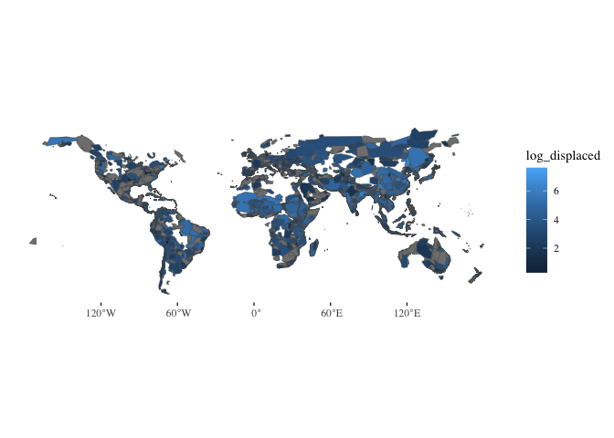
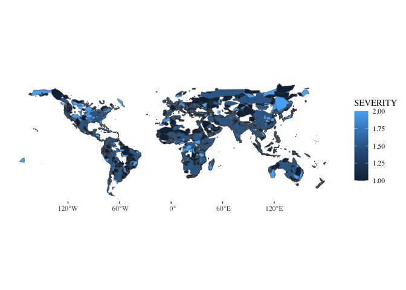

Pull flood polygons
Ty Tuff, ESIIL Data Scientist 2023-10-27
library(dplyr)
Attaching package: 'dplyr'
The following objects are masked from 'package:stats':
filter, lag
The following objects are masked from 'package:base':
intersect, setdiff, setequal, union
library(sf)
Linking to GEOS 3.11.0, GDAL 3.5.3, PROJ 9.1.0; sf_use_s2() is TRUE
library(terra)
terra 1.7.39
library(glue)
Attaching package: 'glue'
The following object is masked from 'package:terra':
trim
library(ggplot2)
library(ggthemes)
# Connect to API: https://floodobservatory.colorado.edu/temp/FloodArchive_region.shp
flood_polygon_data <- glue("/vsicurl/https://floodobservatory.colorado.edu/temp/FloodArchive_region.shp") %>%
vect() %>%
st_as_sf(coords = c("long","lat")) %>%
mutate(BEGAN = as.POSIXct(strptime(BEGAN, format="%y/%m/%d"))) %>%
mutate(ENDED = as.POSIXct(strptime(ENDED, format="%y/%m/%d"))) %>%
mutate(VALIDATION = as.factor(VALIDATION)) %>%
mutate(MAINCAUSE = as.factor(MAINCAUSE)) %>%
mutate(log_dead = log10(DEAD)) %>%
mutate(log_displaced = log10(DISPLACED)) %>%
mutate(log_area = log10(AREA)) #%>%
#select(Began, Ended, ID, GlideNumber, Country,
# OtherCountry, Area, Validation, Dead, Displaced,
# MainCause, Severity, log_dead, log_displaced,log_area, geometry)
flood_polygon_data
Simple feature collection with 5131 features and 17 fields
Geometry type: GEOMETRY
Dimension: XY
Bounding box: xmin: -176.1486 ymin: -54.85077 xmax: 179.9823 ymax: 74.00105
Geodetic CRS: MapInfo Generic Lat/Long
First 10 features:
ID GLIDENUMBE COUNTRY OTHERCOUNT LONG LAT AREA
1 1 0 Algeria 0 5.230257 35.814242 92615.668
2 2 0 Brazil 0 -45.348871 -18.711052 678498.821
3 3 0 Phillipines 0 122.974280 10.020719 12846.028
4 4 0 Indonesia 0 124.606276 1.014892 16542.125
5 5 0 Mozambique 0 32.349078 -25.869263 20082.211
6 6 0 Comoros islands 0 43.359976 -11.651576 1035.608
7 7 0 New Zealand 0 175.734165 -37.230452 7871.367
8 8 0 Indonesia 0 108.139505 -7.040083 77091.115
9 9 0 USA 0 -85.174239 40.669067 210527.956
10 10 0 Bolivia 0 -63.288713 -21.224368 69706.892
BEGAN ENDED VALIDATION DEAD DISPLACED MAINCAUSE SEVERITY
1 <NA> <NA> News 26 3000 Heavy rain 1
2 <NA> <NA> News 229 80000 Heavy rain 2
3 <NA> <NA> News 43 444 Torrential rain 1
4 <NA> <NA> News 21 300 Torrential rain 1
5 <NA> <NA> News 19 0 Heavy rain 2
6 <NA> <NA> News 2 35000 Tropical cyclone 1
7 <NA> <NA> News 4 200 Heavy rain 1
8 <NA> <NA> News 10 2000 Heavy rain 1
9 <NA> <NA> News 7 2250 Rain and snowmelt 2
10 <NA> <NA> News 2 1000 Heavy Rain 1
geometry log_dead log_displaced log_area
1 POLYGON ((1.994201 36.55729... 1.414973 3.477121 4.966684
2 POLYGON ((-41.42766 -15.441... 2.359835 4.903090 5.831549
3 POLYGON ((123.3318 10.33395... 1.633468 2.647383 4.108769
4 POLYGON ((124.0085 0.36953,... 1.322219 2.477121 4.218591
5 POLYGON ((32.0195 -24.85583... 1.278754 -Inf 4.302812
6 POLYGON ((43.29787 -11.8572... 0.301030 4.544068 3.015195
7 POLYGON ((176.4058 -37.7460... 0.602060 2.301030 3.896050
8 POLYGON ((111.0781 -6.57599... 1.000000 3.301030 4.887004
9 MULTIPOLYGON (((-88.63389 4... 0.845098 3.352183 5.323310
10 POLYGON ((-61.74586 -19.635... 0.301030 3.000000 4.843276
ggplot(data=flood_polygon_data, aes(fill=log_displaced)) +
geom_sf() +
theme_tufte()

ggplot(data=flood_polygon_data, aes(fill=SEVERITY)) +
geom_sf() +
theme_tufte()

Last update:
2023-11-16